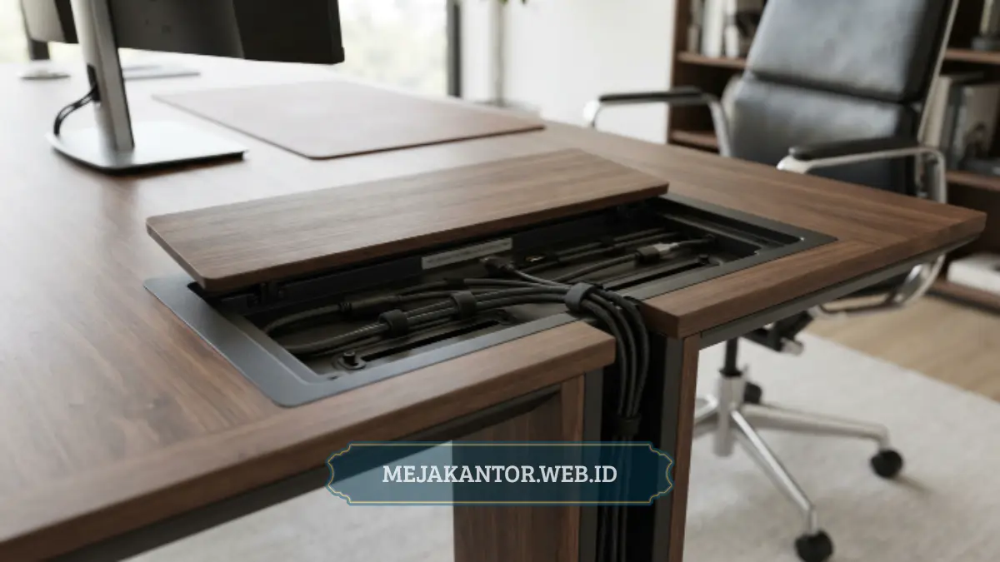

Meja Direktur MDE-02 adalah meja kerja eksekutif dengan desain solid yang dilengkapi sistem manajemen kabel terintegrasi dan material tahan gores, dirancang untuk mendukung tampilan profesional ruang kerja direktur.
- MDE-02 dirancang khusus untuk kebutuhan ruang kerja direktur dengan tampilan formal.
- Sistem manajemen kabel membantu menjaga kerapian area kerja dari kabel yang berserakan.
- Material utama menggunakan lapisan tahan gores untuk pemakaian jangka panjang.
- Desain kaki meja dan permukaan kerja mendukung ergonomi kerja harian.
- Cocok dipadukan dengan partisi atau elemen furnitur kantor lain untuk ruang eksekutif.
Daftar Isi Artikel
- Apa Itu Meja Direktur MDE-02?
- Apa Spesifikasi Utama Meja Direktur MDE-02?
- Bagaimana Fitur Manajemen Kabel pada MDE-02 Bekerja?
- Apa Kelebihan Material yang Digunakan pada MDE-02?
- Apa Kelebihan dan Kekurangan Meja Direktur MDE-02?
- Meja Direktur MDE-02 Cocok untuk Ruang Kerja Seperti Apa?
- Bagaimana Cara Merawat Meja Direktur MDE-02 agar Tetap Awet?
Apa Itu Meja Direktur MDE-02?
Meja Direktur MDE-02 adalah salah satu tipe meja kerja eksekutif yang dirancang untuk menampilkan kesan formal dan rapi di ruang kerja direktur atau pimpinan perusahaan.
Desainnya umumnya mengusung bentuk solid dengan permukaan kerja yang luas untuk menunjang aktivitas administratif maupun pertemuan singkat di meja kerja.
Sebagai meja kelas eksekutif, MDE-02 tidak hanya mengutamakan fungsi, tetapi juga tampilan visual yang mencerminkan citra profesional perusahaan di mata tamu maupun klien yang berkunjung ke ruang direktur.
Apa Spesifikasi Utama Meja Direktur MDE-02?
Secara umum, meja tipe direktur seperti MDE-02 memiliki dimensi yang lebih besar dibanding meja staf biasa, dengan permukaan kerja yang cukup luas untuk menampung perangkat komputer, dokumen, dan ruang gerak kerja yang nyaman.
Rangka dan kaki meja umumnya dibuat dari bahan yang kokoh untuk menopang beban permukaan meja dalam jangka panjang, sementara bagian bawah meja biasanya dilengkapi ruang kosong yang cukup untuk kenyamanan posisi kaki pengguna saat duduk dalam waktu lama.
Beberapa varian meja direktur sekelas MDE-02 juga dilengkapi laci penyimpanan tambahan di salah satu sisi, yang berguna untuk menyimpan dokumen atau perlengkapan kerja penting agar tetap rapi dan mudah dijangkau.
Bagaimana Fitur Manajemen Kabel pada MDE-02 Bekerja?
Fitur manajemen kabel pada Meja Direktur MDE-02 dirancang untuk menyembunyikan dan merapikan jalur kabel perangkat elektronik agar tidak terlihat berantakan di permukaan maupun kolong meja.
Umumnya, sistem ini menggunakan jalur kabel tersembunyi di bagian bawah permukaan meja, dilengkapi lubang kabel pada titik tertentu sehingga kabel charger, komputer, atau lampu meja dapat disalurkan secara rapi tanpa harus terlihat melintang di atas meja.

Manfaat utama dari fitur ini adalah menjaga tampilan meja tetap bersih dan profesional, sekaligus mengurangi risiko kabel tersangkut atau tertarik secara tidak sengaja saat pengguna bergerak di sekitar meja.
Bagi ruang kerja direktur yang sering menerima tamu atau klien, kerapian kabel ini turut berkontribusi pada kesan pertama yang lebih baik terhadap ruang kerja secara keseluruhan.
Apa Kelebihan Material yang Digunakan pada MDE-02?
Material yang umum digunakan pada meja kelas direktur seperti MDE-02 adalah papan dasar particle board atau MDF yang dilapisi HPL atau melamine berkualitas, memberikan permukaan yang tahan gores dan tidak mudah pudar meski digunakan dalam waktu lama.
Lapisan permukaan tahan gores ini penting untuk meja direktur karena permukaan meja sering digunakan untuk menulis, meletakkan dokumen, hingga perangkat elektronik setiap hari, sehingga daya tahan material menjadi faktor utama dalam pemilihan meja eksekutif.
Selain tahan gores, material dengan lapisan berkualitas juga lebih mudah dibersihkan dari noda ringan seperti tumpahan minuman atau debu, sehingga perawatan harian menjadi lebih praktis dibanding material kayu solid tanpa lapisan pelindung.
Dari sisi tampilan, pilihan warna dan tekstur pada lapisan HPL umumnya dapat disesuaikan dengan konsep interior ruang direktur, mulai dari warna kayu natural hingga warna solid modern.
Apa Kelebihan dan Kekurangan Meja Direktur MDE-02?
Kelebihan utama MDE-02 terletak pada kombinasi antara tampilan formal, sistem manajemen kabel yang rapi, dan material permukaan yang tahan lama untuk pemakaian harian di ruang kerja eksekutif.
Dari sisi kekurangan, meja dengan dimensi besar seperti tipe direktur umumnya membutuhkan ruang yang cukup luas, sehingga kurang ideal untuk ruang kerja dengan luas terbatas. Selain itu, harga meja kelas eksekutif dengan fitur tambahan seperti manajemen kabel umumnya lebih tinggi dibanding meja staf standar.
Meja Direktur MDE-02 Cocok untuk Ruang Kerja Seperti Apa?
Meja tipe ini paling sesuai digunakan pada ruang kerja direktur, general manager, atau pimpinan perusahaan yang membutuhkan tampilan formal sekaligus fungsi kerja yang lengkap dalam satu unit furnitur.
Ruang kerja dengan luas memadai dan konsep interior formal akan lebih maksimal memanfaatkan tampilan meja ini, terutama jika dipadukan dengan kursi eksekutif dan elemen furnitur pendukung lain yang senada.
Untuk ruang kerja yang juga membutuhkan area rapat terpisah, informasi mengenai Daftar Harga Meja Rapat Kantor Terbaru 2026 dapat menjadi referensi tambahan dalam merencanakan furnitur ruang eksekutif secara keseluruhan. Sementara itu, pembahasan mengenai Mengenal Partisi Workstation: Sekat Meja Kantor dapat membantu jika ruang direktur juga memerlukan area kerja staf pendukung di sekitarnya.
Bagaimana Cara Merawat Meja Direktur MDE-02 agar Tetap Awet?
Perawatan permukaan meja sebaiknya menggunakan lap kering atau sedikit lembap untuk membersihkan debu harian, dan menghindari cairan pembersih yang mengandung bahan kimia keras agar lapisan permukaan tidak cepat pudar.
Kabel yang tersimpan pada jalur manajemen kabel sebaiknya ditata ulang secara berkala agar tidak menumpuk berlebihan, sehingga fungsi kerapian kabel tetap optimal dalam jangka panjang.
Menghindari beban berlebih pada permukaan meja, terutama di bagian tepi, juga membantu menjaga struktur meja tetap kokoh dan tidak mudah melengkung seiring waktu pemakaian.
Meja Direktur MDE-02 menawarkan kombinasi tampilan formal, fitur manajemen kabel yang rapi, dan material permukaan tahan gores yang cocok untuk kebutuhan ruang kerja eksekutif. Bagi perusahaan yang sedang mempertimbangkan meja direktur, faktor ketersediaan ruang, kebutuhan penyimpanan, dan kesesuaian dengan konsep interior tetap perlu menjadi pertimbangan utama sebelum memutuskan pembelian.
Tertarik dengan Meja Direktur MDE-02?
Konsultasikan ukuran custom, pilihan warna HPL, dan dapatkan penawaran harga pengadaan terbaik sekarang.
Konsultasi via WhatsApp 0889-8964-3555
Mega Anggun
Penulis Konten & Spesialis Penataan Interior Kantor. Berpengalaman dalam memberikan tips ergonomi dan memilih furnitur terbaik untuk menunjang produktivitas kerja.